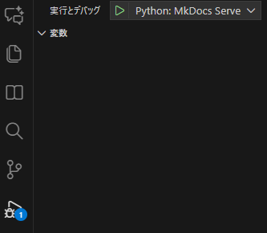

自动启动脚本¶
在 MkDocs 文档开发测试时，通常需要先用后台命令 mkdocs serve 启动服务，再手动输入 URL 打开浏览器查看内容。页面关闭后，后台服务器还会继续占用端口，需要手动查找并关闭进程，操作不便。
本文提供两个可选的自动启动浏览器脚本，助你方便测试，无需手动输入 URL。其中 Python 方案可方便关闭进程，推荐使用。
自动启动方式对比
使用 VS Code tasks.json + launch.json
- 利用 postDebugTask 执行 shell 命令启动服务和打开浏览器
- 优点：不需要额外脚本文件
- 缺点：后台进程不会随 Debug 自动释放，启动延迟需要额外处理
使用独立 Python 脚本（serve.py） + launch.json
- 脚本自己启动 MkDocs、等待服务、打开浏览器，并阻塞主进程
- 优点：可以在停止调试时自动关闭服务，完整控制进程，易于扩展
- 缺点：需要额外一个 Python 文件
简单 Bash 脚本
- 使用后台命令启动 MkDocs + 打开浏览器
- 优点：写法简单
- 缺点：端口进程不会自动释放，需要手动查杀
依赖项安装
建议在 WSL 环境下操作。
- 安装
wslview（来自 wslu 工具集，用于在 Windows 中打开 URL）：sudo apt update sudo apt install wslu - 检查是否安装成功：
若能输出路径即为安装成功。
which wslview
import subprocess
import time
import sys
import shutil
PORT = 8206 # 替换成你希望使用的端口号，例如 8206
# 检查 wslview 是否存在
if shutil.which("wslview") is None:
print("wslview 未安装，请先运行：sudo apt install wslu")
sys.exit(1)
# 启动 MkDocs serve
proc = subprocess.Popen(["mkdocs", "serve", "-a", f"127.0.0.1:{PORT}"])
# 等待 1 秒让服务器启动
time.sleep(1)
# 打开浏览器
subprocess.run(["wslview", f"http://127.0.0.1:{PORT}"])
# 阻塞等待 MkDocs 结束
proc.wait()
在 .vscode/launch.json 添加如下配置，用于一键调试：
{
"version": "0.2.0",
"configurations": [
{
"name": "Python: MkDocs Serve",
"type": "python",
"request": "launch",
"program": "${workspaceFolder}/serve.py",
"console": "integratedTerminal"
}
]
}
使用方法：
- 运行 python serve.py 或通过 VSCode 的 F5 快捷键直接调试，即可自动启动 MkDocs 并打开页面

- 停止调试或 Ctrl+C 结束，端口会自动释放，无需手动查杀进程
#!/bin/bash
# -----------------------------
# MkDocs 一键启动脚本 (WSL)
# -----------------------------
# 配置端口
PORT=8206 # 替换为你想要使用的端口号
# 检查 wslview 是否安装
if ! command -v wslview &> /dev/null
then
echo "wslview 未安装，请先运行：sudo apt install wslu"
exit 1
fi
# 启动 MkDocs serve（后台运行）
echo "启动 MkDocs serve 在端口 $PORT ..."
mkdocs serve -a 127.0.0.1:$PORT &
# 获取 MkDocs 进程 PID
MKDOCS_PID=$!
# 等待 1 秒，让服务器启动
sleep 1
# 自动在 Windows 浏览器打开
wslview http://127.0.0.1:$PORT
# 等待 MkDocs 服务结束（可 Ctrl+C 终止，但端口进程不会自动回收）
wait $MKDOCS_PID
首次使用前给予执行权限：
chmod +x serve.sh
启动测试：
./serve.sh
如需手动关闭端口：
- 查询占用端口进程
lsof -i :8206 # 替换为你的端口号 - 结束进程
kill <PID>
建议
- 推荐使用 Python 脚本：方便集成到 VSCode，Ctrl+C 停止时端口自动释放，无需手动杀进程；
- Bash 脚本没有自动管理后台端口功能，适合简单场景；
- 记得根据实际端口修改
PORT变量。